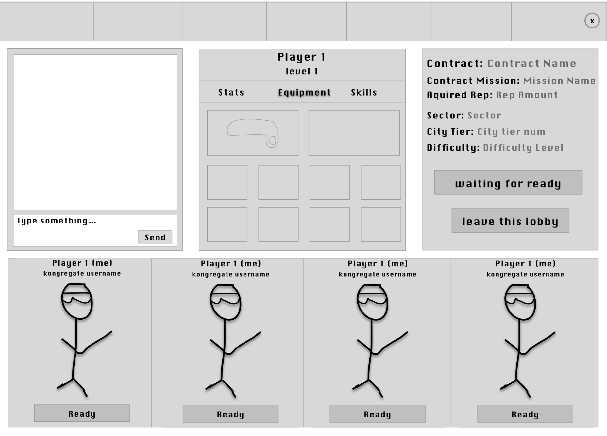
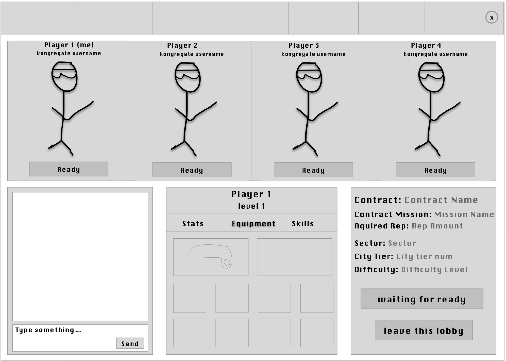
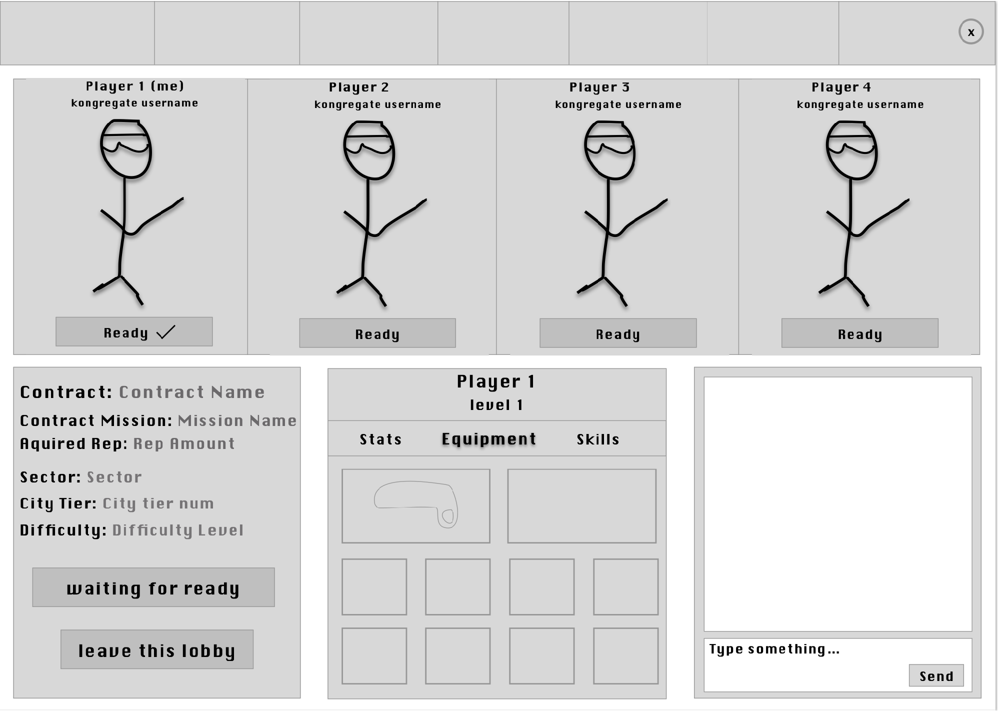
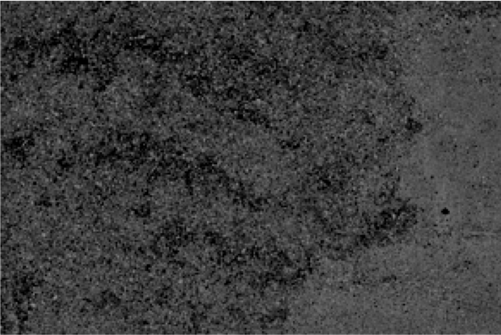
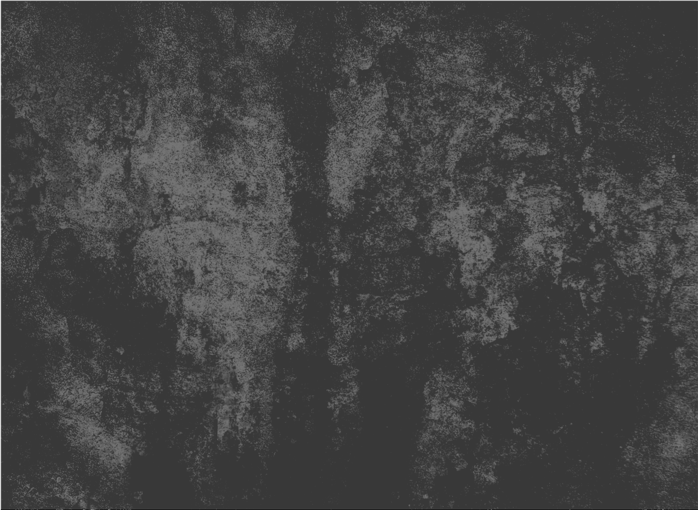
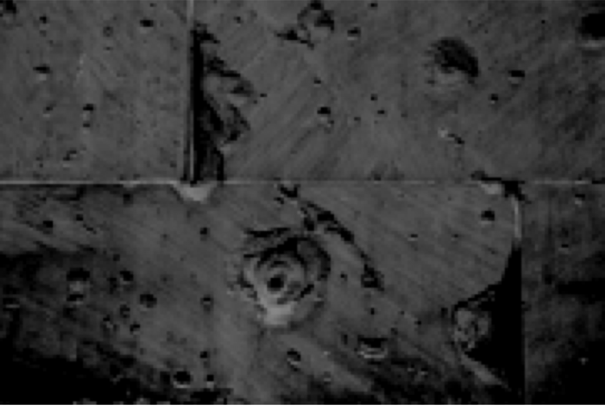
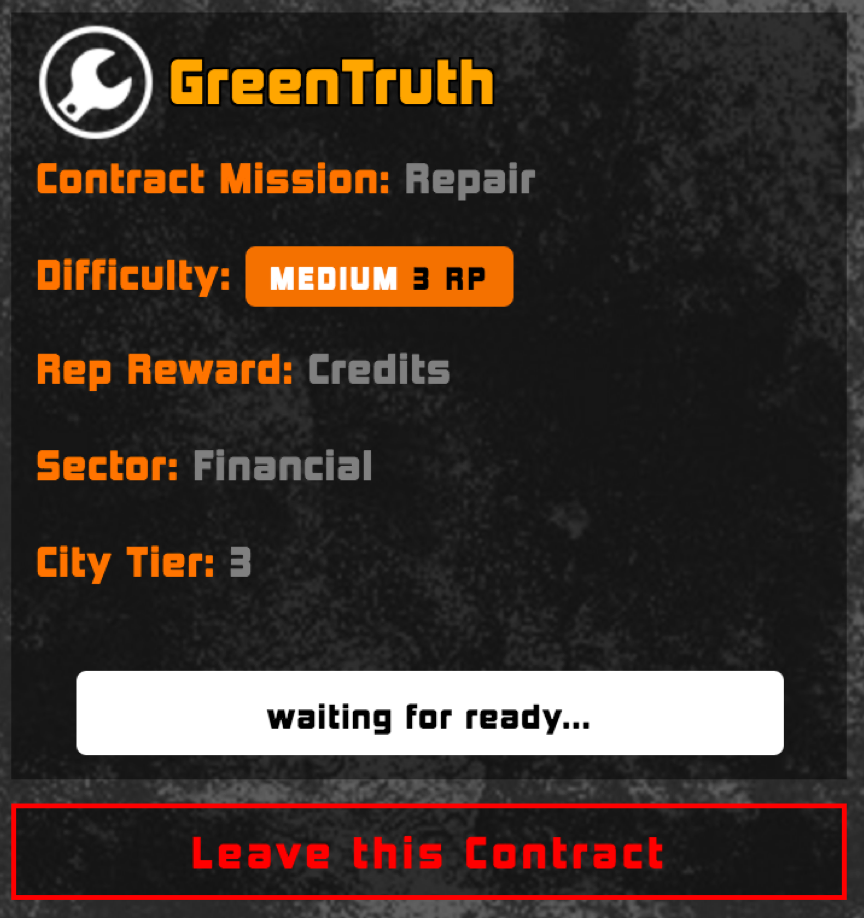
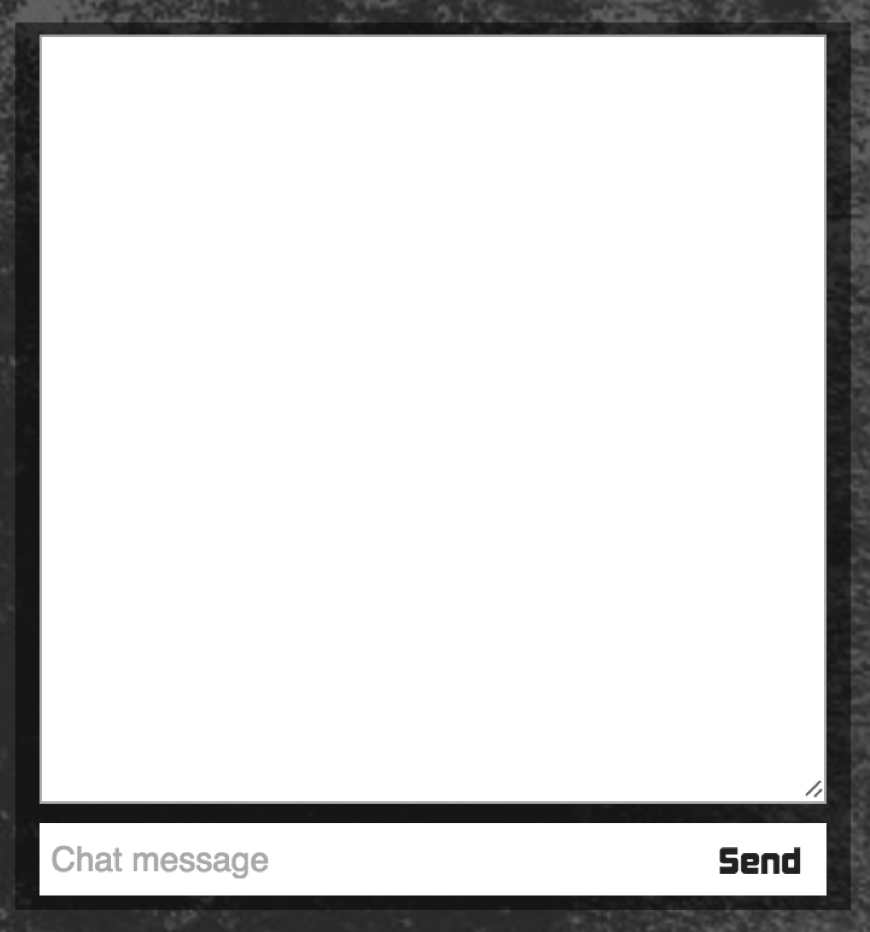
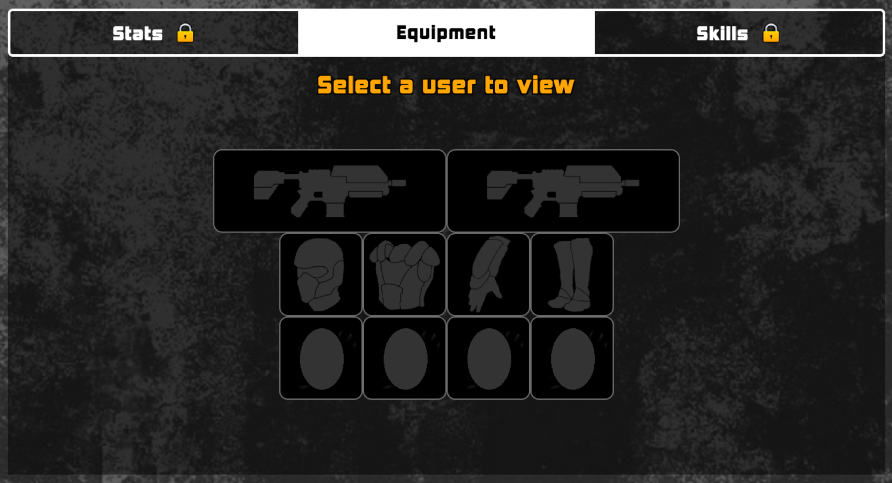
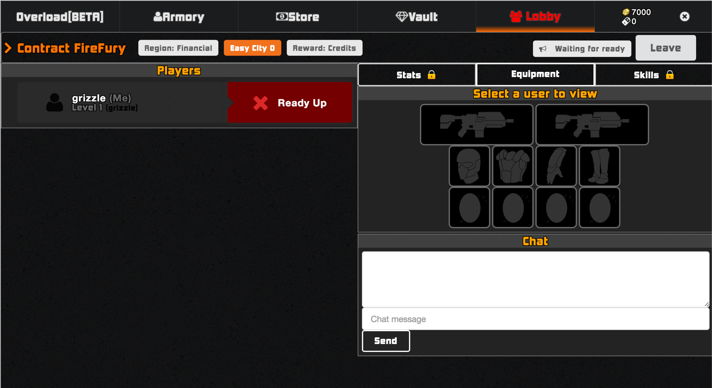

Context
In June of 2016, I participated in a five-week front-end web development internship with the up-and-coming gaming company, Blacktower Entertainment. While there, myself and another intern were tasked with redesigning two of their game menus: the lobby, where users wait to join multi-player games, and the character customization page. Here, I will explore our process for the lobby, as that had the largest and most in-depth redesign.
Challenge
The challenge of this project was to create a lobby screen that not only fit the game’s established asthetics, bit also fit with current gaming standards for pages of this type.
The game is built using the JavaScript framework Ember.js. Before we began, the lobby had all the features it was going to include already, so our job was mainly to manipulate the positioning of these items using HTML, established Ember components that were linked to the page, and the CSS compiler, Sass, . The lobby elements we were to restyle were the chat window, the player’s equipment panel, the player avatar boxes, and the “mission” (game) details
Ideation
As someone unfamiliar with online gaming, to prepare for the redesign I got a feel for the game’s asthetics by playing it several times, exploring all the menus of the game. I took note of the color palettes, accent colors, and general tone of the game. I looked to how other games set up their lobby pages to gain a general understanding of how these pages should flow. As in any field, there are standards that users expect to be met concerning where elements reside on the page.
The first thing I noticed our page was lacking that separated it from its collegues was any sort of texture in the background. Since the page needs to draw the user’s attention to so many different parts, I believed a dark, roughly-patterned background image would be an ideal landscape to set these page elements upon. It gave the lobby texture, without being overbearing. I also looked for something that fit in with the dystopian, dirty concrete feel I gained from the game’s already established asthetics.
The game creators already had a color palette in place, as well as a font style. It was important to me to create page elements that integrated these previously defined styles. We used sharp corners, heavy outlines, call-to-action colors, and block text to achieve a cohesive look across text and element.
Wireframes



Before we began looking at colors or styles for the page elements, we worked with the game creators to prefect the layout these items were trying to bring to life. Game lobby pages generally follow a hierarchy with the most important elements in the top left corner, and least important in the bottom right, like many web applications. Not being gamers, it was important to gain an understanding of what are considered the “most important” elements in this situation.
Thorugh talking with our clients and researching other lobbies, it was understood that being able to see your team members and their respective stats takes the most presedence. We presented the client with several lo-fi wireframes of layout arrangements and through conversing with them were able to settle on a final look.
Once a layout was agreed upon (the bottom one), the next step was to begin integrating the research we had done concerning mood boards of images and integrating the already established color palette and font style into out layout.
Since the game is set in a dystopian era, I therefore felt it was important to intergrate this murky, grungy feel into the lobby thorugh my choice of background. The page has four key elements vying for attention from the user, so I wanted something that would make those elements pop but not distract from their content.
Images



Final Product
The final product was a fully functional gaming lobby that highlighted the game’s established style, was informative, and fit with the standards that web gamers expect. I learned a lot about an industry I previously had no knowledge on. This was a good challenge as a designer because it made me put all of my asthetics aside to focus on matching an industry with a very distinct look.

Mission Details
This box holds all of the important information concerning the game players are waiting to begin. This element also had the most routing concerning the framework that we had to deal with. Our biggest challenge was figuring out how to get the icon to render to this page.

Chat Box
The chat box needed very little styling as it is the simplest element on the page. We made the area populated by the conversation larger, and made the “send” button sit inside of the typing area to keep the section to be only two elements.

Player Display
We came up with the idea for the player’s avatar to show with their name and status. This gives other players a better sense of their teammates and the group in general.

Player Info
This element allows other players to check out the equipment and skills of their fellow players. It was important to the game creators that the weapons displayed here remained the same size as they are on a separate page that we did not redesign. We did not do very much to this section other than the background that covered the whole page.
From Beginning to End


Most of the styling that we implemented had to do with the organization of the page. Each component is fairly straightforward on it’s own but getting the flow of these elements was vital to the success of this redesign. I believe we found a flow that worked well, and made sense for new and experienced online gamers alike. We made sure all parts of the page was filled, with no dead space that made it look unorganized and boring. By adding the player’s actual avatars to the page, we made each experience more personal and more deeply enveloped the user in the game world.
Dividing all the game elements between two rows gives the page a better sense of cohesiveness that the original layout was definitely missing. Having all elements relatively the same size helped in this regard as well.
To view the sceens in action, click here. After you play through the tutorial, you'll have a chance to enter a live game. Both the single and multi-player choices implement our screens. Enjoy!